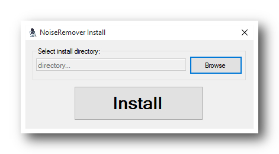

About
Hiss happens. So does ground hum, computer noise, and any number of unwanted sonic artifacts. Bring on NoiseRemover, and hear them disappear. Featuring real-time noise profiling, innovative transient preservation, and increased low-frequency resolution, NoiseRemover truly is a revolution in noise reduction.
Client Install
Click on "Client .exe" for download installer. Run downloaded file. 